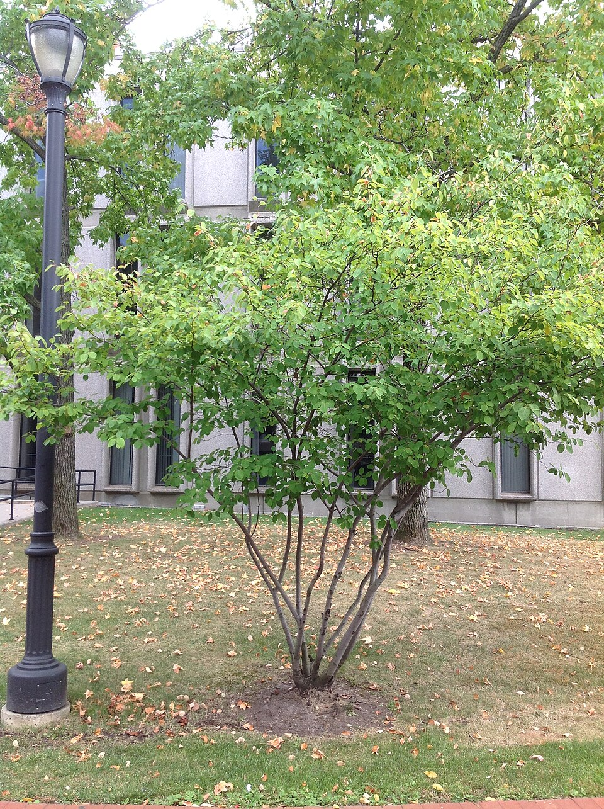
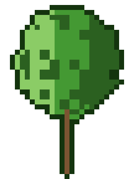

Amelanchier — Serviceberry (Amelanchier)
The unassuming keystone — small, pretty, and ecologically indispensable, feeding 40+ bird species and dozens of mammals while quietly holding the food web together from the woodland edge.
Combat flavor
Don't let the small stature fool you — Amelanchier packs surprisingly hard wood (hardest in this roster by Janka), and its keystone ecology translates to a powerful "Rally the Wildlife" aura that amplifies surrounding allied units' effectiveness.
Real-world facts
Typical / max height5–8 m typical; up to 12 m in wild conditions
Lifespanup to 50 years
Wood~835 kg/m³ air-dry; Janka ~8,010 N — exceptionally dense and hard for its size, comparable to hard maple or yellow birch
Growth speedmedium
Ecology / notable traitsDescribed as a keystone genus, supporting 40+ bird species and dozens of small mammals through its fruit; one of the earliest-blooming trees of spring, critical for early pollinators; multi-stemmed habit makes it hard to knock over; no toxicity, no thorns, no allelopathy; globally common but underappreciated; highly adaptable across rocky slopes, riverbanks, and woodland edges
Gallery

